Bounty ships
The sixty wanted ships, ten for each pirate faction.
Each faction is broken by taking its ten bounties in order, smallest first. Their stories are in the Runners wiki.
The Tollmen
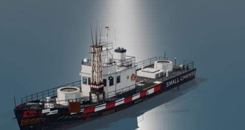
Small ChangeNo. 1 · Nico Reyes "Tally" · Scout skiffIn review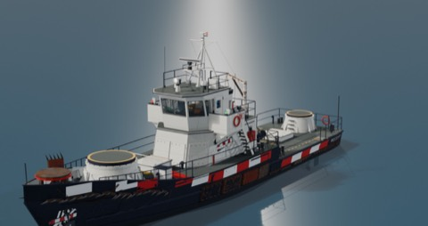
ReceiptNo. 2 · Marisol Vega "Red Ink" · DartIn review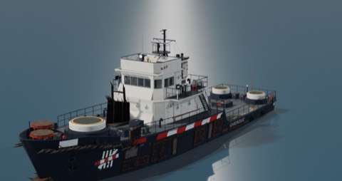
OverdueNo. 3 · Hector Ibarra "Overtime" · GunrunnerIn review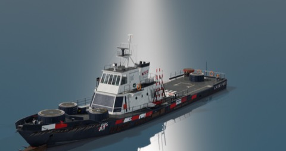
Late FeeNo. 4 · Dwayne Keller "Low Water" · SkipjackIn review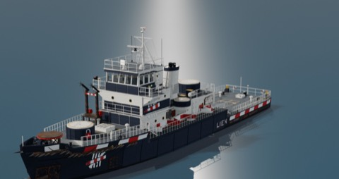
LienNo. 5 · Ana Lucía Ferro "Repo" · Armoured runnerIn review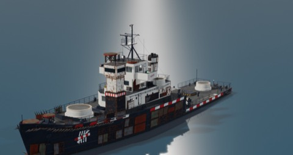
AuditNo. 6 · Tomás Aranda "Ledger" · Patrol EscortIn review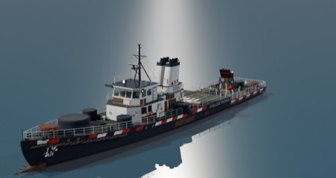
CollectionsNo. 7 · Benny Ochoa "Blazer" · Blockade RunnerIn review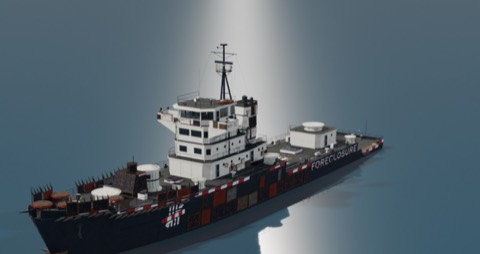
ForeclosureNo. 8 · Celia Montoya "Bulwark" · CorvetteIn review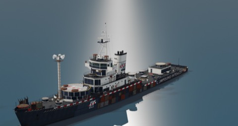
Compound InterestNo. 9 · Arturo Salas "the Collector" · DestroyerIn review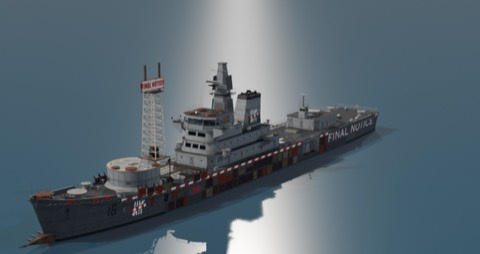
Final NoticeNo. 10 · Ignacio Varela "the Comptroller" · Missile cruiserIn review
The Driftmark
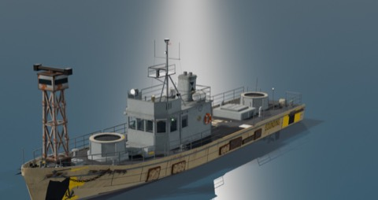
SoundingNo. 1 · Yusuf Haddad "Glass" · Scout skiffIn review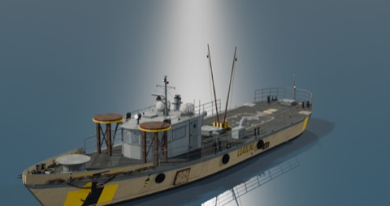
LeadlineNo. 2 · Dimitra Kallis "Purse" · WispIn review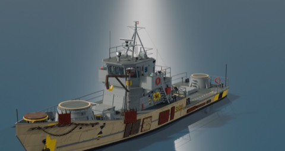
ShoalNo. 3 · Karim Nassar "the Queue" · DartIn review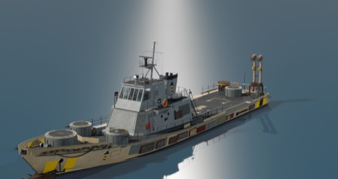
SandbarNo. 4 · Paolo Rinaldi "Mudskipper" · SkipjackIn review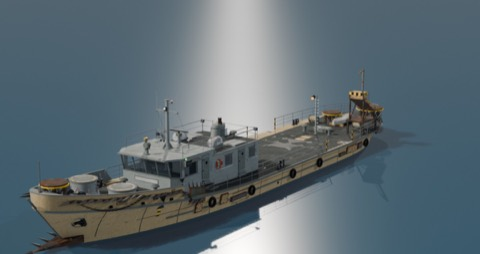
NarrowsNo. 5 · Layla Mansour "Clean Papers" · ShadeIn review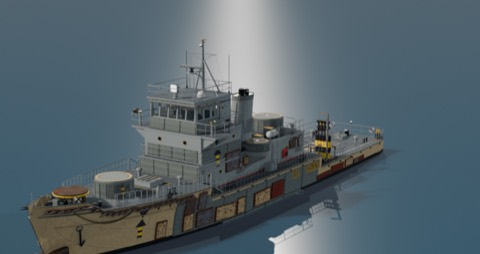
False ChannelNo. 6 · Omar Farouk "Buoy Man" · Armoured runnerIn review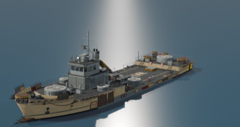
GroundswellNo. 7 · Stavros Pappas "Salvor" · Rocket bargeIn review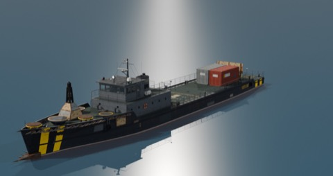
Wreck LightNo. 8 · Nadia Saleh "Nobody" · GhostIn review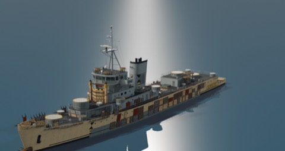
LockkeeperNo. 9 · Elias Khoury "the Lockkeeper" · FrigateIn review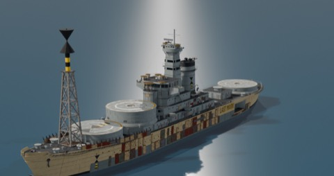
Last MarkNo. 10 · Mehmet Aydın "the Pilot" · BattleshipIn review
Saltrot
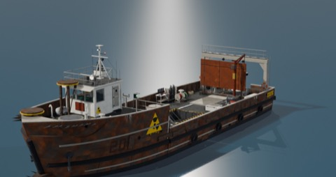
StaticNo. 1 · Jin Park "Geiger" · Salvage launchIn review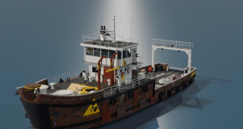
AshfallNo. 2 · Haru Sato "Tug" · Recovery WorkboatIn review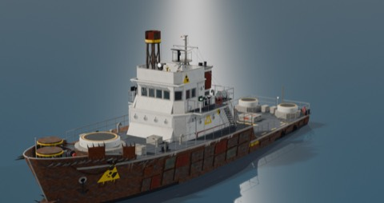
Half-LifeNo. 3 · Mina Choi "First Shot" · GunrunnerIn review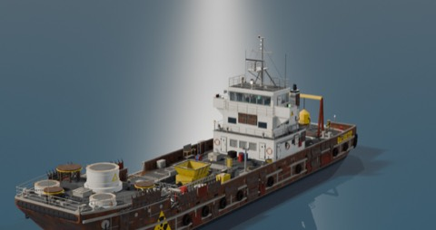
DosimeterNo. 4 · Viktor Lebedev "Deserter" · Barge-HoundIn review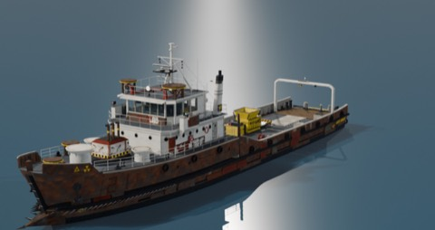
Hot HoldNo. 5 · Kenji Mori "Hot Hands" · Salvage tenderIn review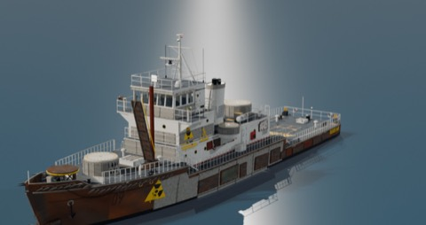
Black RainNo. 6 · Soo-ah Han "Press Gang" · Armoured runnerIn review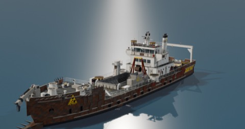
Dead PortNo. 7 · Goro Ishida "the Grab" · Salvage dredgerIn review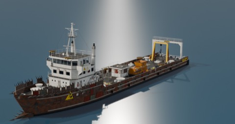
FalloutNo. 8 · Dae-ho Lim "Long Tow" · AtlasIn review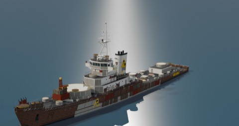
Ash CoastNo. 9 · Yuna Takeda "the Yard Boss" · DestroyerIn review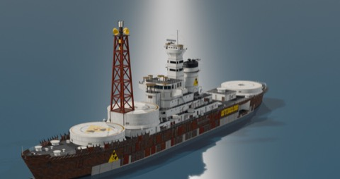
AfterglowNo. 10 · Isamu Kuroda "Old Salt" · BattleshipIn review
The Longliners
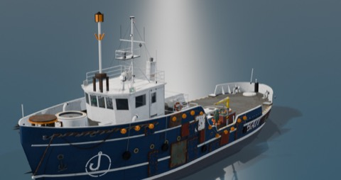
BaitNo. 1 · Manu Taufa "Castaway" · Fishing boatIn review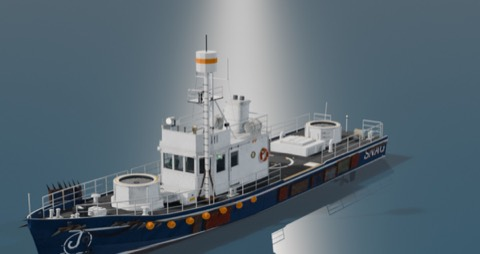
SnagNo. 2 · Rosa Calderón "Spotter" · Scout skiffIn review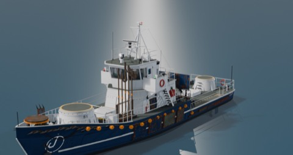
GaffNo. 3 · Benji Alvarez "Fair Price" · DartIn review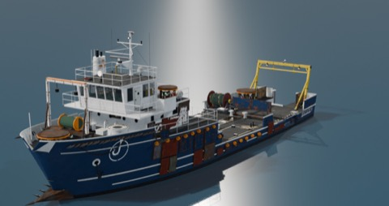
BycatchNo. 4 · Teina Moana "Netter" · TrawlerIn review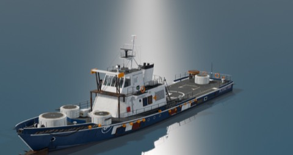
Flying FishNo. 5 · Chen Wei-lun "Racer" · SkipjackIn review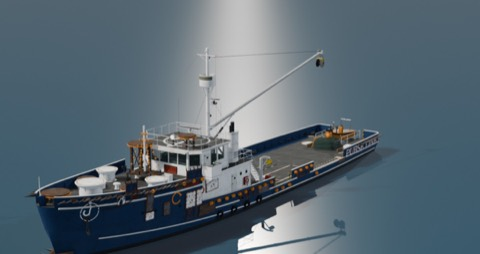
Purse LineNo. 6 · Isabel Navarro "the Purse" · SeinerIn review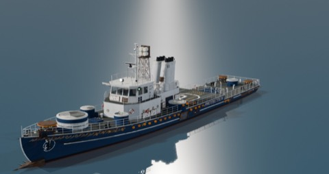
ProtectionNo. 7 · Rafael Duarte "Gatekeeper" · Blockade RunnerIn review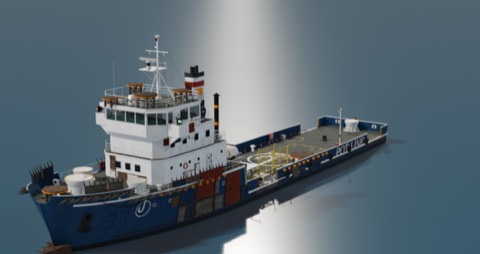
Pot LineNo. 8 · Lani Kealoha "Galley" · Crab boatIn review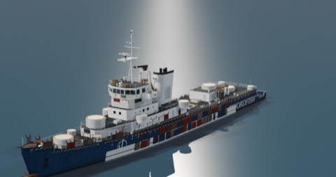
SwordfishNo. 9 · Marco Salazar "the Ring Boss" · FrigateIn review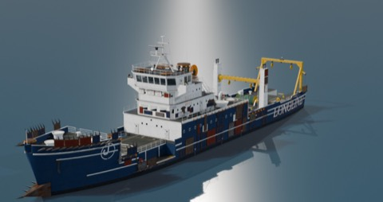
LonglineNo. 10 · Augusto Ruiz "Abuelo" · Factory trawlerIn review
The Flotilla
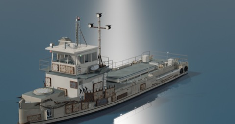
Convoy 41No. 1 · Kofi Mensah "Messenger" · Supply runnerIn review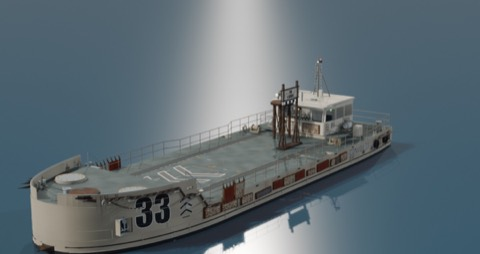
Convoy 33No. 2 · Tiago Fonseca "Taxman" · MuleIn review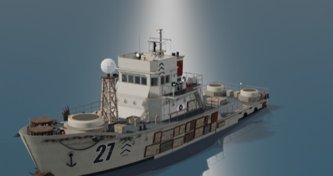
Convoy 27No. 3 · Ngozi Okafor "Picket" · GunrunnerIn review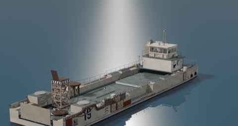
Convoy 19No. 4 · Lucas Moreira "Ramp" · Landing craftIn review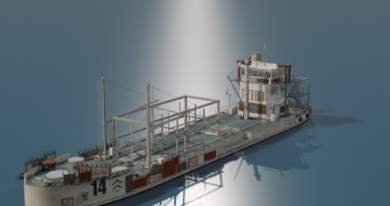
Convoy 14No. 5 · Amara Diallo "Stores" · WorkhorseIn review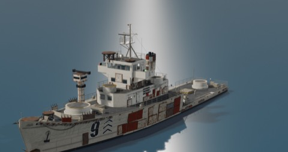
Convoy 9No. 6 · Joaquim Neto "Commander" · Patrol EscortIn review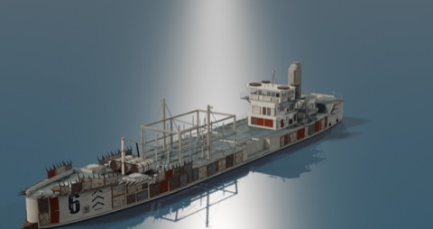
Convoy 6No. 7 · Chidi Eze "Fuel Man" · FreighterIn review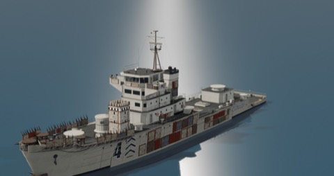
Convoy 4No. 8 · Beatriz Lima "Gatehouse" · CorvetteIn review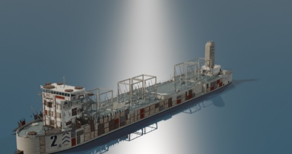
Convoy 2No. 9 · Ade Bankole "the Quartermaster" · LeviathanIn review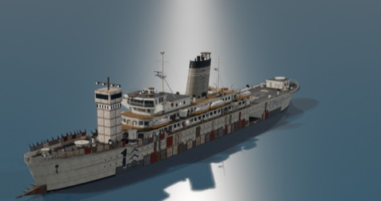
Convoy 1No. 10 · Helena Sousa "the Commodore" · Armed linerIn review
Deadweight
- SpillNo. 1 · Farhan Ali "Lanes" · DartIn review
- BilgeNo. 2 · Abdi Warsame "Skiff" · GunrunnerIn review
- DrumNo. 3 · Priya Nair "Drums" · MuleIn review
- Sounding PipeNo. 4 · Ravi Menon "Five Minutes" · Armoured runnerIn review
- Load LineNo. 5 · Hassan Al-Balushi "Shepherd" · Patrol EscortIn review
- SlickNo. 6 · Sunil Perera "Slick" · Refitted tankerIn review
- FlashpointNo. 7 · Tariq Mahmood "Warning Shot" · Rocket bargeIn review
- BunkerNo. 8 · Samira Hussein "Bunker" · Fleet tankerIn review
- CrudeNo. 9 · Imran Qureshi "the Pumpman" · DestroyerIn review
- DeadweightNo. 10 · Anwar Rahman "the Owner" · Crude tankerIn review